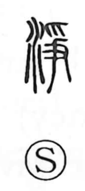

浄

Kun: kiyoi, kiyoraka, kiyomeru | On: jo
pure ・ clean ・ to purify ・ cleanse
Explanation
浄, formerly 淨, combines 水, water, with 爭, now 争, as its phonetic. The early word seems to have concerned cold or chill and belongs near other words with that meaning.
Pure, clear water was often cold. This sensory association connects the chill with cleanness and clarity, giving clean, pure, and purifying. The water component keeps the physical quality present in the formation.
The word later becomes frequent in Buddhist writing. 浄土 applies purity to a religious realm, while uses for cleansing or purification carry the same movement into conduct and spiritual condition. Physical clarity and religious purity meet through the clear water.